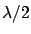
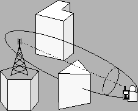
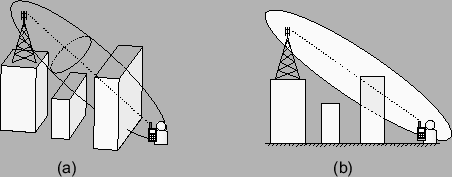

Como se vio en la sección 4.2, la existencia o no de línea de vista entre dos antenas no depende únicamente de que la línea que las une esté libre de obstáculos. Se debe verificar que los mismos no penetren en la elipse de revolución definida por focos en ambas antenas y radio . Por lo tanto, el software debe ser capaz de verificar si la intersección entre el volumen ocupado por dicha elipse de revolución y los obstáculos presentes en el entorno es vacía o no.
Dado que el software se desarrolló para entornos urbanos y suburbanos, únicamente fueron considerados obstáculos a las edificaciones presentes. Es decir, se despreció la posibilidad de que el terreno por sí solo obstaculice la visión de una antena. Verificar que únicamente el terreno obstaculice o no la visión es una complicación innecesaria para el entorno considerado, ya que la mayoría se encuentra edificada y por lo tanto considerada.
Otra hipótesis adicional, como se explicó en la sección 8.1.5, es que los posibles obstáculos son prismas rectos, todos con bases horizontales (ver figura 10.6).
|

|
Aunque estas hipótesis simplifican el problema, la complicación principal reside en que el techo puede tomar cualquier forma, inclusive no convexa, y obviamente sus caras pueden tener cualquier orientación respecto a la recta que une ambos focos del elipsoide, que como se verá más adelante tiene una importancia fundamental. Antes de continuar, vale la pena aclarar que de ahora en adelante cuando se refiera a las edificaciones, éstas serán únicamente las candidatas a intersectar con la elipse de revolución. Por candidatas se consideran aquellas edificaciones que se encuentren a una distancia menor del segmento que une los focos que el eje menor de la elipsoide. En realidad, y para simplificar esta búsqueda inicial de candidatos, se medirá la distancia entre las edificaciones y la recta en el plano horizontal (es decir en la proyección).
La primera y más simple solución sería poder verificar directamente si alguna de las edificaciones presentes intersecta con la elipse de revolución. Para poder realizar esto, se debería contar con un biblioteca que maneje formas en tres dimensiones. Como se vio, la biblioteca JTS, aunque es una biblioteca sumamente completa y poderosa, únicamente realiza operaciones entre geometrías en el plano. Por lo tanto, esta primera solución es inviable y se deben buscar soluciones que únicamente utilicen operaciones entre geometrías en dos dimensiones.
Una solución de este tipo bastante frecuente es la de suponer que las paredes de las edificaciones son únicamente cuatro, están alineadas con la recta que une los focos o perpendiculares a ella, y además la proyección del techo y el segmento que forman los focos sobre el plano horizontal se intersectan. Si tal fuera el caso, la solución sería bastante sencilla. El primer paso sería encontrar la intersección entre el plano vertical que pasa por el segmento y las edificaciones. Esto definiría un perfil de alturas; luego habría que verificar que no existe ningún punto en dicho perfil de alturas que se encuentre dentro de la elipse formada por la intersección entre dicho plano y la elipse de revolución (ver figura 10.7). Pero las simplificaciones supuestas son demasiado restrictivas. Por ejemplo, si existe una edificación que no corta el segmento, su elipse no sería la misma que para el resto. Pero aún peor, si las paredes estuvieran alineadas en cualquier sentido, podría suceder que la zona más comprometida (y con la cual debería realizarse el perfil) no sea la que se intersecta con el segmento. Algo similar sucedería si las edificaciones tomaran cualquier forma, por ejemplo cóncava.
|

|
La solución desarrollada para el problema es la siguiente. Cada cara de cada prisma define un plano. La intersección de dicho plano con la elipse de revolución define una elipse. Si esta elipse se intersecta con la cara, entonces el prisma se intersecta con la elipse de revolución y por lo tanto no existe línea de vista. En caso contrario se continúa con las sucesivas caras del prisma y con todos los prismas presentes. Si ninguno de los prismas intersecta la elipse de revolución, entonces existe línea de vista.
Esta solución, aunque robusta, presenta dos problemas. El primero y más crítico es el tiempo de cálculo. Por cada punto donde se quiera verificar la existencia de línea de vista se deben hallar los parámetros que definen la elipsoide de Fresnel, luego por cada pared de cada edificio presente se debe intersectar la elipsoide con el plano definido por la pared y hallar la elipse así definida, y por último se debe verificar si dicha elipse se intersecta o no con la pared. El segundo contratiempo es que intersectar una elipsoide con un plano arbitrario no es un problema sencillo (la forma de hallar dicha intersección puede verse en el anexo A) que conlleva tres rotaciones si además la elipsoide también es arbitraria. Esto degrada aún más la performance temporal del algoritmo.